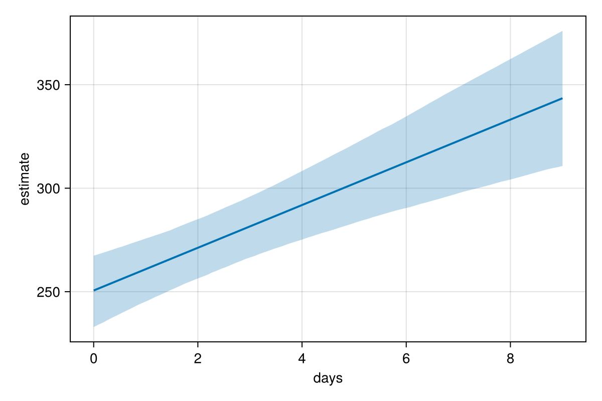

A multilevel model
Data often come in groups: repeated measurements on the same people, pupils in schools, plots in sites. A multilevel model gives each group its own intercept and slopes, and learns from all groups at once how much these vary. This tutorial fits one, reads its group-level estimates and predicts for a new group.
The data
We simulate reaction times of 18 people measured on 10 consecutive days of sleep restriction. Each person has their own baseline and their own rate of slowing down.
using PracticalBayesianRegression, DataFrames, Distributions, Random
rng = Xoshiro(11)
people = ["p" * lpad(i, 2, '0') for i in 1:18]
baseline = Dict(p => 250 + 25 * randn(rng) for p in people)
slowing = Dict(p => 10 + 6 * randn(rng) for p in people)
sleep = DataFrame(person = repeat(people; inner = 10), days = repeat(0:9; outer = 18))
sleep.reaction = [baseline[p] + slowing[p] * d + 25 * randn(rng)
for (p, d) in zip(sleep.person, sleep.days)]
first(sleep, 3)| Row | person | days | reaction |
|---|---|---|---|
| String | Int64 | Float64 | |
| 1 | p01 | 0 | 219.667 |
| 2 | p01 | 1 | 306.494 |
| 3 | p01 | 2 | 314.377 |
The labels are zero-padded (p01, ..., p18) so that they sort the same way in Julia and in R; see Coming from brms.
Fitting
(1 + days | person) gives every person their own intercept and their own slope for days, drawn from a joint normal distribution whose standard deviations and correlation are estimated:
fit = brm(@bf(reaction ~ days + (1 + days | person)), sleep; seed = 1) Family gaussian
Links mu = identity; sigma = log
Formula reaction ~ days + (1 + days | person)
Data 180 observations
Draws 4 chains × 2000 iterations (warmup 1000, thin 1) → 4000 draws
Sampler nuts · 381 ms per chain
── Multilevel Hyperparameters ─────────────────────────────────────────────────────────────
~person (Number of levels: 18)
╭─────────────────────┬───────────────────────────────────────────────────────────────────╮
│ │ Estimate Est.Error l-95% CI u-95% CI Rhat Bulk_ESS Tail_ESS │
├─────────────────────┼───────────────────────────────────────────────────────────────────┤
│ sd(Intercept) │ 31.25 6.57 20.79 46.50 1.00 983 1638 │
│ sd(days) │ 8.52 1.90 5.76 13.78 1.01 453 187 │
│ cor(Intercept,days) │ -0.49 0.19 -0.80 -0.06 1.00 682 1530 │
╰─────────────────────┴───────────────────────────────────────────────────────────────────╯
── Regression Coefficients ──────────────────────────────────────────────────────
╭───────────┬───────────────────────────────────────────────────────────────────╮
│ │ Estimate Est.Error l-95% CI u-95% CI Rhat Bulk_ESS Tail_ESS │
├───────────┼───────────────────────────────────────────────────────────────────┤
│ Intercept │ 250.44 7.96 234.36 266.33 1.00 1070 1476 │
│ days │ 10.24 2.06 6.29 14.47 1.00 696 1453 │
╰───────────┴───────────────────────────────────────────────────────────────────╯
── Further Distributional Parameters ────────────────────────────────────────
╭───────┬───────────────────────────────────────────────────────────────────╮
│ │ Estimate Est.Error l-95% CI u-95% CI Rhat Bulk_ESS Tail_ESS │
├───────┼───────────────────────────────────────────────────────────────────┤
│ sigma │ 21.39 1.29 19.09 24.16 1.00 2363 3065 │
╰───────┴───────────────────────────────────────────────────────────────────╯
✗ max Rhat 1.01 · ✗ min ESS 187 · ✗ 16 divergent · ✓ treedepth < 10 · ✓ E-BFMI ≥ 0.3
chains have not mixed well: run more iterations (`iter`) or simplify the model
16 divergent transitions after warmup; consider a higher `delta`
The last lines of the summary check the sampler. Here they report divergent transitions: in some region of the posterior the sampler's steps were too large to follow it, so the draws may be biased. This is common in multilevel models with few groups, where the group-level standard deviations and the group effects depend strongly on each other. The usual remedy is a higher target acceptance rate, which makes the steps smaller:
fit = brm(@bf(reaction ~ days + (1 + days | person)), sleep; seed = 1, delta = 0.95) Family gaussian
Links mu = identity; sigma = log
Formula reaction ~ days + (1 + days | person)
Data 180 observations
Draws 4 chains × 2000 iterations (warmup 1000, thin 1) → 4000 draws
Sampler nuts · 511 ms per chain
── Multilevel Hyperparameters ─────────────────────────────────────────────────────────────
~person (Number of levels: 18)
╭─────────────────────┬───────────────────────────────────────────────────────────────────╮
│ │ Estimate Est.Error l-95% CI u-95% CI Rhat Bulk_ESS Tail_ESS │
├─────────────────────┼───────────────────────────────────────────────────────────────────┤
│ sd(Intercept) │ 31.84 6.86 20.87 47.53 1.00 1097 1391 │
│ sd(days) │ 8.38 1.68 5.71 12.26 1.00 664 1540 │
│ cor(Intercept,days) │ -0.50 0.19 -0.80 -0.08 1.01 611 1619 │
╰─────────────────────┴───────────────────────────────────────────────────────────────────╯
── Regression Coefficients ──────────────────────────────────────────────────────
╭───────────┬───────────────────────────────────────────────────────────────────╮
│ │ Estimate Est.Error l-95% CI u-95% CI Rhat Bulk_ESS Tail_ESS │
├───────────┼───────────────────────────────────────────────────────────────────┤
│ Intercept │ 250.59 8.60 232.93 267.42 1.01 688 1345 │
│ days │ 10.32 2.17 5.94 14.68 1.00 719 1156 │
╰───────────┴───────────────────────────────────────────────────────────────────╯
── Further Distributional Parameters ────────────────────────────────────────
╭───────┬───────────────────────────────────────────────────────────────────╮
│ │ Estimate Est.Error l-95% CI u-95% CI Rhat Bulk_ESS Tail_ESS │
├───────┼───────────────────────────────────────────────────────────────────┤
│ sigma │ 21.39 1.27 19.06 24.08 1.00 3009 2924 │
╰───────┴───────────────────────────────────────────────────────────────────╯
✓ Rhat ≤ 1.01 · ✓ ESS ≥ 400 · ✓ no divergences · ✓ treedepth < 10 · ✓ E-BFMI ≥ 0.3
All checks now pass. The summary has a section for the grouping factor person: the standard deviation of the intercepts (sd(Intercept)), of the slopes (sd(days)) and their correlation. The population-level coefficients describe the average person; sigma is the residual standard deviation.
Group-level estimates
ranef gives each person's deviation from the average, and group_coef (brms's coef) the sum of the average and the deviation. Here are each person's estimated slopes:
slopes = group_coef(fit)["person"]["days"]
DataFrame(person = [r.variable for r in slopes],
estimate = [r.estimate for r in slopes],
lower = [r.lower for r in slopes],
upper = [r.upper for r in slopes])| Row | person | estimate | lower | upper |
|---|---|---|---|---|
| String | Float64 | Float64 | Float64 | |
| 1 | p01 | 21.2066 | 16.7646 | 25.7966 |
| 2 | p02 | 16.7035 | 12.2783 | 20.9184 |
| 3 | p03 | 13.7177 | 9.21508 | 18.2009 |
| 4 | p04 | 16.0811 | 11.7528 | 20.3218 |
| 5 | p05 | 15.3033 | 10.8683 | 19.7242 |
| 6 | p06 | 9.36249 | 5.1416 | 13.699 |
| 7 | p07 | 12.0396 | 7.60597 | 16.3583 |
| 8 | p08 | 6.00058 | 1.58393 | 10.1319 |
| 9 | p09 | 15.7883 | 11.4215 | 20.1585 |
| 10 | p10 | 0.257346 | -4.06925 | 4.54987 |
| 11 | p11 | -1.63874 | -6.13615 | 2.98135 |
| 12 | p12 | 5.74836 | 1.33565 | 10.0434 |
| 13 | p13 | -3.3984 | -7.65543 | 0.940537 |
| 14 | p14 | 0.622289 | -3.71677 | 5.06343 |
| 15 | p15 | 15.6197 | 11.315 | 19.801 |
| 16 | p16 | 11.6737 | 7.47299 | 15.9272 |
| 17 | p17 | 13.3384 | 8.88989 | 17.7307 |
| 18 | p18 | 17.9323 | 13.5474 | 22.3481 |
Each estimate is pulled towards the average slope, more so for people whose own data are noisy. This partial pooling is what distinguishes a multilevel model from fitting each person separately.
Plotting the average effect
conditional_effects computes the expected response along one predictor, with the others held fixed and the group-level effects left out; plot_effects draws it.
using CairoMakie
plot_effects(fit, :days)
Predicting for a new person
Predictions for people in the data use their own estimates. For a person not in the data, allow new levels: their intercept and slope are then drawn from the estimated population distribution, so the prediction carries the between-person uncertainty.
newperson = DataFrame(person = fill("new", 10), days = 0:9)
pred = posterior_epred(fit; newdata = newperson, allow_new_levels = true)
size(pred)(4000, 10)pred has one row per posterior draw and one column per row of newperson. Summarise it per day:
DataFrame(days = 0:9,
estimate = vec(mean(pred; dims = 1)),
lower = [quantile(c, 0.025) for c in eachcol(pred)],
upper = [quantile(c, 0.975) for c in eachcol(pred)])| Row | days | estimate | lower | upper |
|---|---|---|---|---|
| Int64 | Float64 | Float64 | Float64 | |
| 1 | 0 | 250.386 | 195.134 | 307.814 |
| 2 | 1 | 260.805 | 211.985 | 305.231 |
| 3 | 2 | 271.224 | 228.068 | 311.612 |
| 4 | 3 | 281.644 | 241.82 | 328.407 |
| 5 | 4 | 292.063 | 252.211 | 347.149 |
| 6 | 5 | 302.482 | 254.956 | 367.445 |
| 7 | 6 | 312.902 | 255.647 | 388.951 |
| 8 | 7 | 323.321 | 254.909 | 410.11 |
| 9 | 8 | 333.74 | 253.15 | 431.4 |
| 10 | 9 | 344.16 | 250.625 | 453.439 |
re_formula = :none drops the group-level effects instead, which predicts for the average person.
Next steps
- Predict for new data covers the prediction functions and their options.
- Choose sampler settings explains what to do about divergent transitions, and when a dense metric speeds up multilevel models.